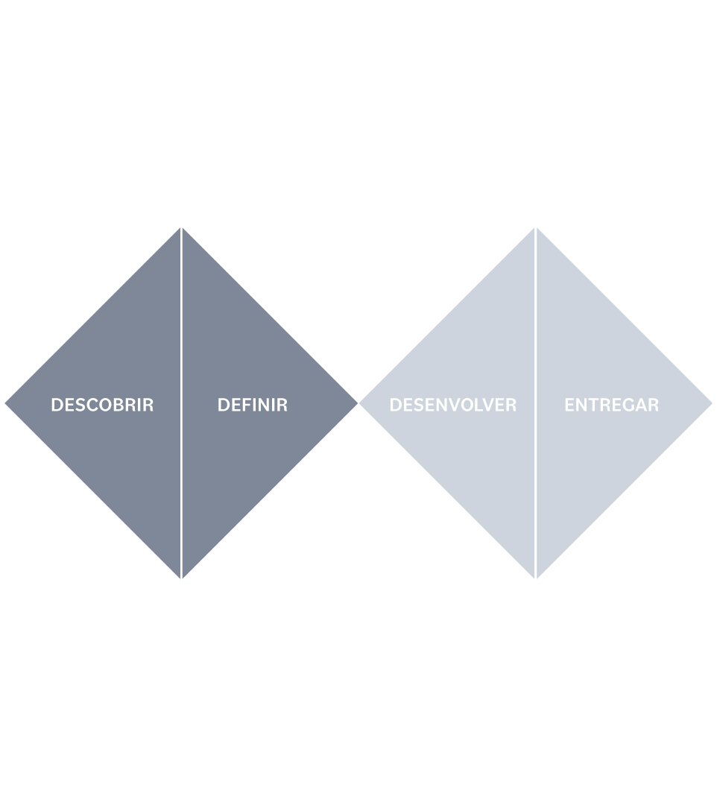

A história do Grupo 5A está baseada nas experiências dos sócios fundadores que identificaram, no início dos anos 2000, lacunas no modo como as empresas geriam os seus negócios, reproduzindo modelos pouco eficientes, com falhas na implantação de novas estratégias e prejudicando seus resultados. A partir desses estudos foi identificada a oportunidade de criar uma empresa diferente, que se destacasse pela forma de atuação. Assim, foi definido que a filosofia do Grupo 5A seria voltada aos fundamentos de uma empresa da era progressista. Uma empresa progressista também está atenta aos fatores que movem uma empresa:
A 5A acredita que o diferencial competitivo das organizações está no talento humano. Para as organizações alcançarem os resultados esperados, a equipe, e por sua vez a pessoa (talento humano envolvido), deve manter sempre a ATENÇÃO no que faz e no que acontece ao seu redor, identificando as oportunidades e os obstáculos. Desta forma poderá gerar ALTERNATIVAS que aproveitem as oportunidades ou superem os obstáculos. Uma alternativa deve ser sempre acompanhada de uma boa dose de ATITUDE, permitindo, assim, a sua realização. As alternativas devem buscar um alto nível de ASSERTIVIDADE. Mas de nada adiantará a atenção e a geração de alternativas, a atitude e a assertividade se o talento humano não ACREDITAR no que se propõe a fazer, seja na vida profissional ou pessoal.
Contribuir com a transformação das organizações por meio de pessoas, processos e tecnologia.
Ser uma das melhores empresas do País para se trabalhar até 2027
Nossos procesos estão integrados em cada produto ou serviço que entregamos. São baseados em metodologias que facilitam a gestão, o entendimento do problema, a definição, o desenho, desenvolvimento e entrega da melhor solução. E ainda, fundamentais na contratação, gestão e retenção de talentos contribuindo para o baixo turnover e maior produtividade.
FATORES QUE ESTRUTURAM UMA ORGANIZAÇÃO
FATORES QUE MOVEM UMA ORGANIZAÇÃO
FATORES QUE INTEGRAM OBJETIVOS PESSOAIS E ORGANIZACIONAIS
FATORES QUE ABRANGEM AS RELAÇÕES
Baseados em premissas como respeito, verdade, transparência, trabalho e inspiração, a evolução da 5A gerou um grupo coeso de empresas com modelos negócios ao mesmo tempo independentes e complementares, que têm como missão contribuir para a transformação de empresas e profissionais a partir de modelos de negócio modernos e eficientes Todas as empresas do ecossistema 5A trabalham sob a mesma cultura, que exalta melhores práticas para o cotidiano, como a transparência e verdade no trato diário com nossos clientes, o compartilhamento de conhecimento, a abundância e excelência na prestação de serviços com objetivo e integração, além de ter a ousadia de sonhar, acreditar e transformar.
TRANSFORMANDO ORGANIZAÇÕES PARA O FUTURO
Rua Arizona, 1426 10º andar Brooklin,São Paulo/SP
atendimento@5a.com.br +55 11 2344 4595